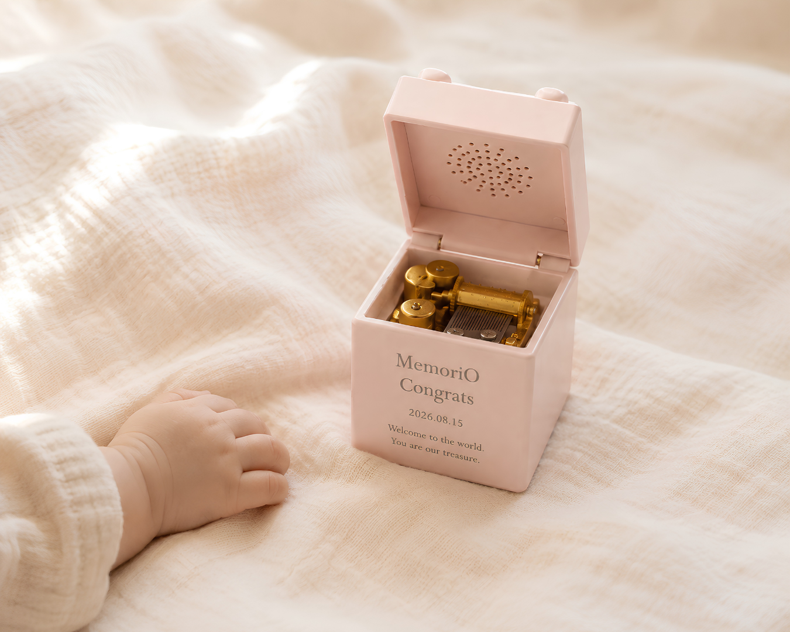
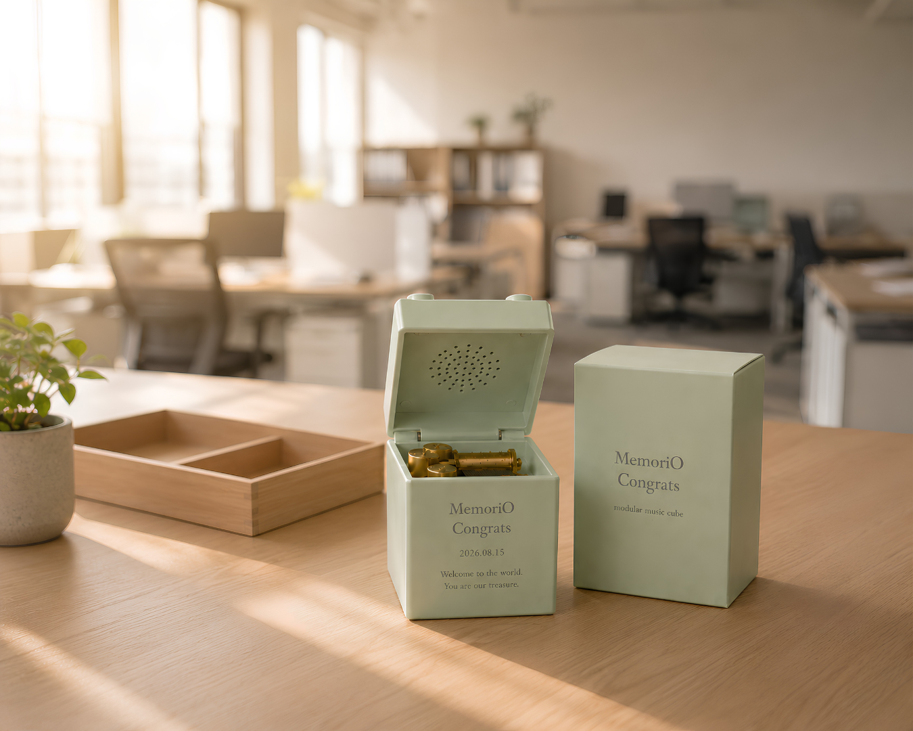
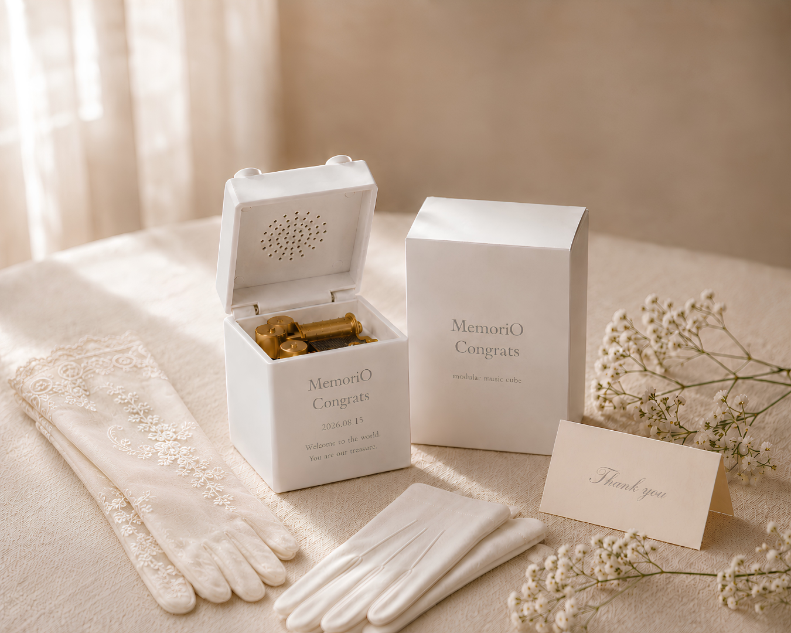
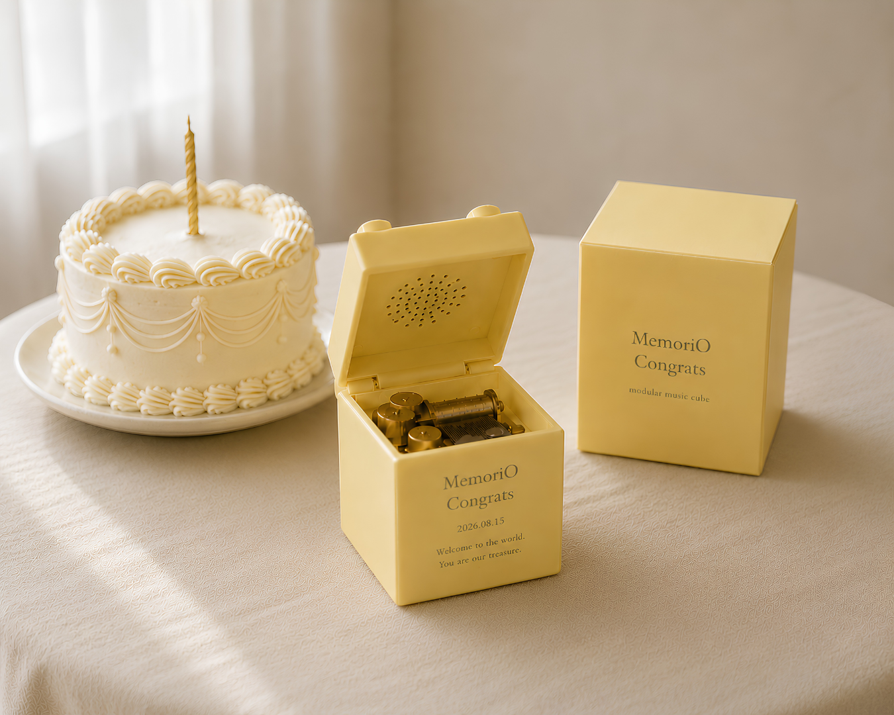
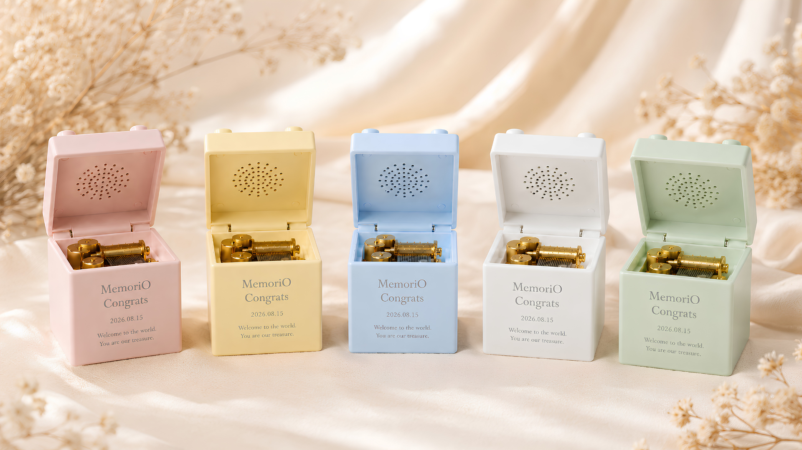

残しておきたいのは、記録ではなく、
その人の声に宿る想い。
写真や動画は、今や簡単に残せる時代。けれど、声や話した想いは、記録して残さなければいつかそっと消えてしまいます。声には、その人の温度や感情、その瞬間の空気まで宿っています。MemoriOは、かけがえのない声をカタチにして残し、人生の節目に贈り、何度でも聴き返せる宝物として届けます。
どの節目に、誰の声を残しますか。
節目を選ぶと、残す声と刻印の例が変わります。




{{ sceneTitle }}
{{ sceneCopy }}
はじまりの声が、ひとつ目になる。
産声、初めて名前を呼んだ声、贈られた言葉。人生の最初の声を、その人の1ブロック目として残します。
一年ごとの声を、聞き比べられるように。
去年の声と、今年の声。並べて聞くと、成長も声のほうに残っています。
今しかない声を、みんなで集めて。
後輩、同級生、先生。色紙のかわりに、あの時間の声を集めて渡します。開いた瞬間、その場がもう一度思い出になります。
その日の空気ごと、残す。
新郎新婦、両親、ゲスト。式の日に集まった声を、式のあとも何度でも開ける記憶にします。
声を残すたび、ひとつ増えていく。
節目のたびに新しいMemoriOが加わります。棚に並ぶ数が、その人が声を残してきた回数になります。
積み上がった声が、歴史になる。
発売前に、手のなかの感触だけ先に。
ドラッグで回して、本体をタップして開閉。色を選び、刻印の文字を打ち替えて、分解した内部まで見られます。
やさしい5色から。
声を集めて、開くだけ。


よくあるご質問
はい。1台のなかに複数の声を残せます。さらに次の節目では新しいMemoriOを追加し、キューブとアプリの年表が一緒に増えていきます。
必要ありません。蓋を開けるだけで声が流れます。祖父母への贈り物でも、操作を覚えていただく必要はありません。
録音リンクをLINEやメールで送るだけで、相手はアプリを入れずにブラウザから録音できます。結婚式や卒業など、人数が多い場面でも使えます。
日付と2行のメッセージを刻めます。上のセクションの3Dで、実際の見え方をお試しいただけます。
本体とクラウドの両方に保存します。保存・削除・引き継ぎの詳しい方針は、発売時にあらためてご案内します。
ひとつ目を、あなたの節目から。
発売日と先行予約の開始を、いちばん早くお知らせします。気になる節目もあわせて教えていただけると、その節目の使い方をご案内します。